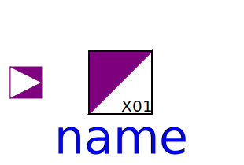
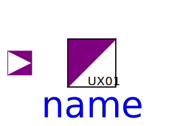
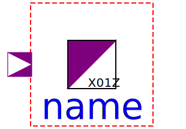

The Converter BooleanToLogic, LogicToBoolean, RealToLogic, and LogicTo Real components are not standard logic components. They were designed to easily convert from or to Boolean or Real valued signals. The LogicToX01, LogicToX01Z and LogicTo UX01 converters correspond to standard logic functions. They transform 9-valued logic to 3- or 4-valued logic.
| Name | Description |
|---|---|
|  LogicToX01 | Conversion to X01 |
| Conversion to X01Z | |
|  LogicToUX01 | Conversion to UX01 |
| Boolean to Logic converter | |
| Logic to Boolean converter | |
| Real to Logic converter | |
| Logic to Real converter | |
| This model will be removed in future Modelica versions, use 'LogicToX01' instead! | |
|  LogicToXO1Z | This model will be removed in future Modelica versions, use 'LogicToX01Z' instead! |